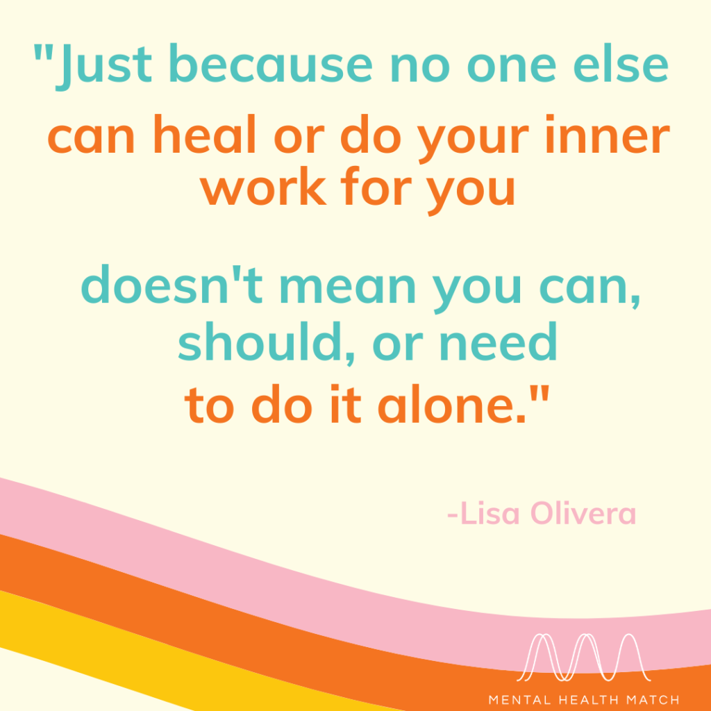

Clinical psychology is a fascinating field where you’ll get to work with a diverse group of people. You’ll read case studies that help you learn how to diagnose mental disorders and help patients.
“I found that with depression, one of the most important things you can realize is that you’re not alone. You’re not the first to go through it, you’re not gonna be the last to go through it.”

![ The Increasingly Hyper College Student Gerry, a successful 21-year-old college student, suddenly found that he was unable to sleep and couldn’t quiet his thoughts at night. It wasn’t long before his friends began to worry about the sudden change in his demeanor. He’d always been respectful but suddenly began demanding the attention of his friends at odd hours of the night. A few days later, Gerry began accusing his roommates of spying on him. His friends convinced him to see a counselor. He was diagnosed with bipolar disorder and worked towards preventing relapse with a combination of medication and cognitive behavioral therapy.](images/CS1.png){kind=link}
![Obsession and the Salesman A British psychologist worked with a salesman who had a hard time leaving his house in the morning due to an obsessive need to complete certain activities. Many of the man’s preoccupations revolved around safety, and he’d developed the idea that he would have bad luck if he didn’t carry through with his rituals. He checked door locks repeatedly and became obsessed with his home’s electrical wiring. The psychologist who worked with the salesman used cognitive behavioral therapy to help him overcome his obsessive behavior and the irrational fear that abandoning his rituals would lead to bad luck.](images/CS3.png){kind=link}
![The Woman Who Wished She Was Dead Jessica, a medical resident in a large hospital, woke up in a sad mood one day and couldn’t shake it. She lost interest in work and started missing shifts for no reason. At home, she had difficulties interacting with her kids and stopped having sex with her husband. Jessica didn’t think about suicide, but she did find herself wishing she was dead. She often thought about being dead when she couldn’t sleep but repeatedly told her husband that nothing was wrong. Her coworkers convinced Jessica to seek help, and she was treated for major depressive disorder.](images/CS4.png){kind=link}
![The Business Student Who Behaved Bizarrely New, strange behaviors that the subject doesn’t recognize can be an indication of a serious psychological disorder. Consider a 21-year-old business student whose bizarre behaviors worried friends and family. He became increasingly agitated, and several people overheard him whispering in an angry voice. Friends and family reached out, but the young man claimed that he couldn’t answer the phone because a chip placed in his brain by aliens would explode if he did. He didn’t abuse drugs or alcohol, but his aunt had been in and out of mental institutions. The young man’s psychologist recognized that he was suffering from paranoid schizophrenia and referred him for comprehensive psychiatric care.](images/CS5.png){kind=link}
![Mike had Social Anxiety Mike is a 20 year-old who reportedly feels depressed and is experiencing a significant amount of stress about school, noting that he’ll “probably flunk out.” He spends much of his day in his dorm room playing video games and has a hard time identifying what, if anything, is enjoyable in a typical day. He rarely attends class and has avoided reaching out to his professors to try to salvage his grades this semester. Mike has always been a self-described shy person and has had a very small and cohesive group of friends from elementary through high school. Notably, his level of stress significantly amplified when he began college. When meeting new people, he has a hard time concentrating on the interaction because he is busy worrying about what they will think of him – he assumes they will find him “dumb,” “boring,” or a “loser.”](images/CS6.png){kind=link}